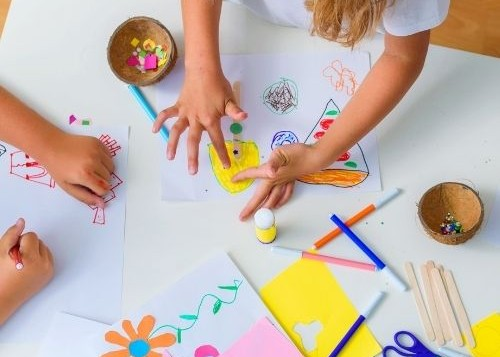

Máte děti? Přijďte zažít festival i s nimi! Děti mají vstup na festival samozřejmě zdarma.
Dopoledne je možné si společně s dětmi projít Stezku životem, pak zajít na workshop Jak mluvit s dětmi o smrti a odpoledne bude pro děti připraven prostor pro volnou hru a tvoření. Řízený program i odpolední hlídání bude probíhat ve spolupráci se zkušenými ženami ze spolku Unitáři.
Workshop Jak mluvit s dětmi o smrti bude probíhat jako diskuze na téma strachu dospělých a dětí ze smrti, a také o tom, jak doprovázet děti tímto tématem a nedělat z něj tabu. Téma bude podané s ohledem na věk přítomných dětí a způsobem, který nebude zatěžující, spíš než smrt se bude rozebírat konec obecně.
V odpoledním bloku se děti tématu smrti již věnovat nebudou.

Návrh harmonogramu celého dne
Komentovaná Stezka životem v Zámeckém parku
Jak mluvit s dětmi o smrti (workshop je vhodný i pro děti)
Pauza na oběd
Rodiče mohou být na přednáškách a pro děti bude zajištěno hlídání
Workshop „Jak mluvit s dětmi o smrti" je vhodný i pro děti – téma bude podané s ohledem na věk přítomných dětí, způsobem, který nebude zatěžující.
Hlavní programVše, co potřebujete vědět
V malém sále, jen několik málo metrů od sálu hlavního. Kdykoliv je možné dítě zkontrolovat a v případě potřeby může dítě kontaktovat i vás.
Zkušené ženy ze spolku Unitáři.
Děti již budou mít volnou zábavu, budou si moci hrát, ale i tvořit a spolupracovat. V rámci odpoledního hlídání již téma smrti nebudeme probírat.
Děti mají vstup na festival zdarma.
Festival je otevřen rodinám s dětmi všech věků. Workshop „Jak mluvit s dětmi o smrti" je přizpůsoben věku přítomných dětí.
Přijďte s celou rodinou
Vstup pro děti je zdarma. Pro dospělé jsou k dispozici vstupenky na celodenní nebo odpolední program.